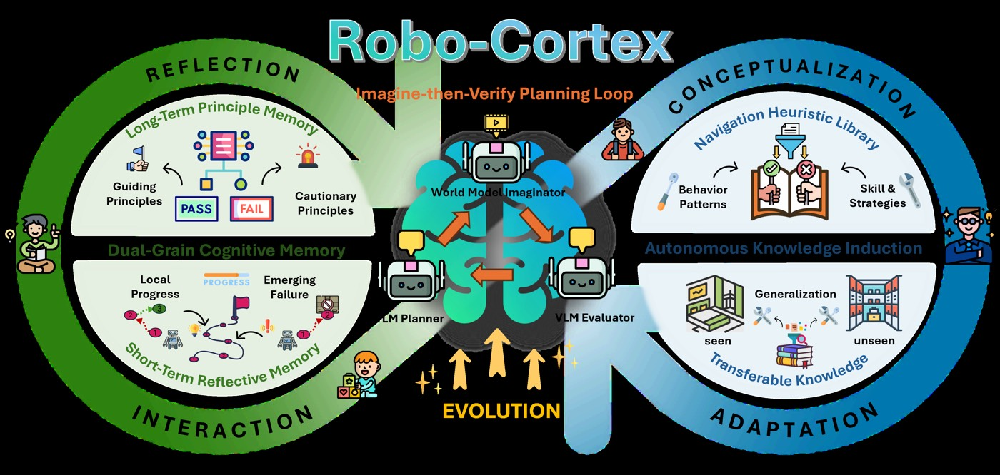
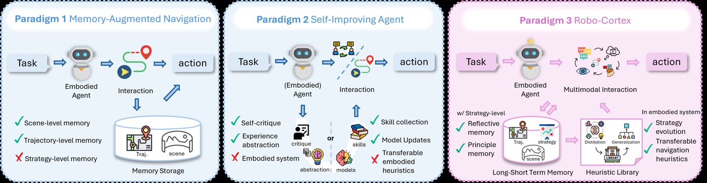
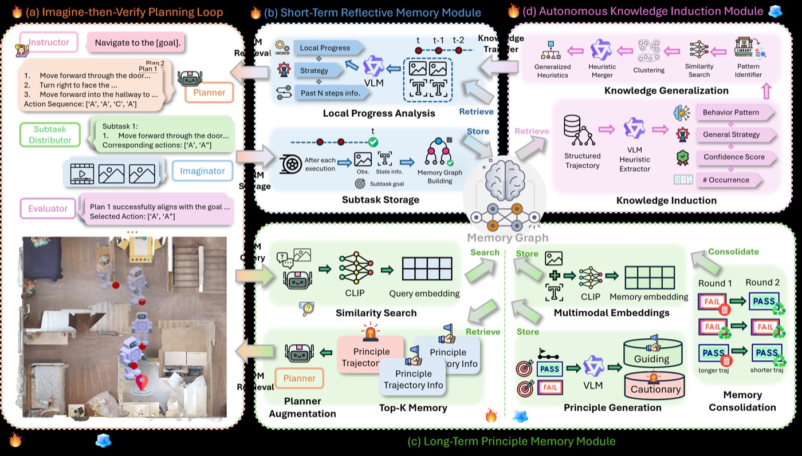
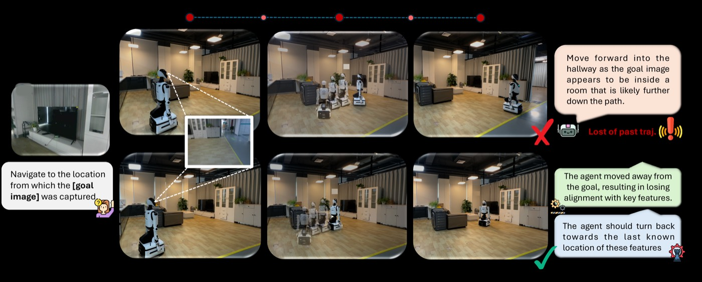

Robo-Cortex: A Self-Evolving Embodied Agent via Dual-Grain Cognitive Memory and Autonomous Knowledge Induction — 핵심 방법론 분석 (Core Methods Analysis)
1. 개요 (Overview)
1.1 출판 정보 (Publication Information)
- 논문 제목 (Paper Title): Robo-Cortex: A Self-Evolving Embodied Agent via Dual-Grain Cognitive Memory and Autonomous Knowledge Induction
- 저자 (Authors): Nga Teng Chan, Yi Zhang, Yechi Liu, Renwen Cui, Fanhu Zeng, Zeyuan Ding, Xiancong Ren, Zhang Zhang, Qifeng Chen, Jian Liu, Yong Dai, Xiaozhu Ju
- 소속 (Affiliation):
- The Hong Kong University of Science and Technology (HKUST) — Qifeng Chen
- X-Humanoid — Yi Zhang, Zeyuan Ding, Xiancong Ren, Yong Dai, Xiaozhu Ju
- Institute of Automation, Chinese Academy of Sciences (CAS) — Yechi Liu, Renwen Cui, Fanhu Zeng, Zhang Zhang
- Beijing University of Aeronautics and Astronautics (BUAA) — Jian Liu
- 발표처 (Published): arXiv preprint, cs.RO + cs.CV, 2026년 5월 18일
- DOI: https://doi.org/10.48550/arXiv.2605.18729
- arXiv: https://arxiv.org/abs/2605.18729
- 프로젝트 페이지: https://robocortex66.github.io (현재 접속 불가)
- 코드: 미공개
1.2 연구 목표 (Research Objective)
Robo-Cortex는 체화된 AI 에이전트의 "경험적 기억상실(Experiential Amnesia)" 문제를 해결한다. 기존의 궤적 기반(trajectory-driven) 또는 반응형(reactive) 정책은 과거 상호작용으로부터 일반화 가능한 탐색 전략을 합성하지 못한다 — 실패 후 같은 실수를 반복하고, 성공한 방법을 새로운 환경에 전이하지 못한다.
이 논문은 다음 핵심 질문에 답한다:
핵심 문제:
"로봇이 과거 탐색 경험으로부터 이식 가능한 전략을 자율적으로
추론하고, 그것을 미지의 환경에서도 활용할 수 있는가?"
기존 한계:
- MapGPT, WMNav 등: 에피소드 간 경험 전이 없음
- 온라인 RL: 느린 수렴, 파국적 망각(catastrophic forgetting)
- 검색 기반 방법: 정적 데이터베이스, 새 패턴 적응 불가
Robo-Cortex의 답:
자연어 휴리스틱 라이브러리(Navigation Heuristic Library) +
이중 입도 인지 메모리(Dual-Grain Cognitive Memory) +
자율적 지식 유도(Autonomous Knowledge Induction)
핵심 기여: 3개의 체화된 탐색 과제(IGNav, AR, AEQA)에서 기존 최고 대비 +4.16% SPL 향상, 미지 환경 휴리스틱 전이 시 +15.30% SPL 달성.

2. 문제 정의 (Problem Definition)
2.1 도전과제 (Challenges)
도전과제 1: 경험적 기억상실 (Experiential Amnesia)
[기존 시스템의 한계]
에피소드 T1: 에이전트가 좁은 복도에서 막힘 → 실패
에피소드 T2: 동일한 패턴 재발생 → 여전히 실패
에피소드 T3: 복도 입구에서 같은 오류 반복
이유:
- 궤적 기반 정책: 개별 행동 시퀀스만 저장
- 반응형 정책: 현재 관찰에만 반응
- 미래 정책에 과거 경험 반영 메커니즘 없음
도전과제 2: 부분 관찰 가능성 (Partial Observability)
체화 탐색은 근본적으로 POMDP(Partially Observable MDP)다:
- 에이전트는 RGB 카메라 관찰만 가능
- 전역 지도 없음
- 목표까지의 실제 거리/방향 모름
- 미지의 환경 — 사전 학습된 지식만 활용 가능
도전과제 3: 일반화 격차 (Generalization Gap)
[학습 환경 vs 배포 환경]
훈련: HM3D/MP3D의 특정 씬
테스트: 완전히 새로운 씬 (unseen environments)
기존 방법의 일반화 한계:
- 환경 특이적 지름길(shortcut) 학습
- 새로운 레이아웃/텍스처에 취약
- 소수의 경험으로는 강건한 전략 학습 불가
도전과제 4: 장기 의존성 (Long-Horizon Dependencies)
AEQA(Active Embodied Question Answering)와 같은 과제:
- 먼저 정보를 수집해야 질문에 답 가능
- 수십 스텝에 걸친 일관된 목표 추적 필요
- 지역 최적에 빠지면 전역 목표 달성 실패
2.2 핵심 해결책
Robo-Cortex는 세 가지 상호 보완적 컴포넌트로 이를 해결한다:
| 문제 | 해결 메커니즘 |
|---|---|
| 경험적 기억상실 | Autonomous Knowledge Induction (AKI) |
| 부분 관찰 가능성 | Imagine-then-Verify Planning Loop |
| 일반화 격차 | Navigation Heuristic Library 전이 |
| 장기 의존성 | Dual-Grain Cognitive Memory (SRM + LPM) |
3. 핵심 방법론 (Core Methods)
3.1 Imagine-then-Verify Planning Loop (상상-검증 계획 루프)
Robo-Cortex의 핵심 의사결정 엔진. 에이전트는 행동하기 전에 세계 모델로 미래를 상상하고, VLM으로 평가한 후 최적 계획을 선택한다.
[Imagine-then-Verify 수식]
입력: 현재 관찰 o_t, 목표 g
1. N개의 후보 계획 생성:
P_t = {p_t^(1), ..., p_t^(N)}
각 계획: p_t^(i) = (a_t^(i), r_t^(i))
a_t^(i): 고수준 행동 시퀀스
r_t^(i): 행동 이유(reason)
2. 서브태스크 분해:
S_t^(i) = D(a_t^(i), r_t^(i))
D: LLM 기반 분해 함수
3. 세계 모델로 h-스텝 미래 상상:
ô_{t+1:t+h}^(i) = W(o_t, S_t^(i))
W: Wan2.1-I2V-A14B-480P-Diffusers (비디오 생성 모델)
4. VLM으로 상상된 미래 평가:
Score^(i) = VLM(ô_{t+1:t+h}^(i), g)
VLM: Qwen2.5-VL-72B-Instruct-AWQ
5. 최적 계획 선택 및 실행:
p_t* = argmax_{i} Score^(i)
Execute(a_t^*)
왜 이 접근이 효과적인가?
- 세계 모델(Wan2.1)이 시각적으로 일관된 미래 프레임을 생성
- VLM 평가기가 생성된 미래가 목표와 얼마나 일치하는지 평가
- 단순한 현재 관찰 기반 결정 대신, 미래 결과를 예측하고 최적을 선택
[Imagine-then-Verify 플로우]
현재 관찰 o_t
│
├──► [계획 생성기 (Qwen2.5-VL)]
│ → N개 (행동, 이유) 쌍 생성
│
├──► [세계 모델 (Wan2.1-I2V)]
│ → 각 계획에 대해 h-스텝 영상 생성
│ → 시각적 미래 상상
│
└──► [VLM 평가기 (Qwen2.5-VL)]
→ 각 상상된 미래를 목표 g와 비교
→ 최고 점수 계획 선택
→ 행동 실행
3.2 Dual-Grain Cognitive Memory (이중 입도 인지 메모리)
두 가지 시간적 범위의 메모리를 결합하여 단기 전술과 장기 전략을 동시에 관리한다.
[메모리 그래프 구조]
G = (V, E)
노드 유형:
V = V^root ∪ V^traj ∪ V^sub
V^root: 에피소드 수준 (목표, 환경 컨텍스트)
V^traj: 결정 단계 수준 (각 행동 스텝)
V^sub: 의미론적 단위 수준 (관찰, 행동, 결과의 세분화)
엣지 E:
계층 관계: root → traj → sub
시간 관계: sub_t → sub_{t+1}
의미 관계: 유사한 sub 노드 간 연결
3.2.1 Short-term Reflective Memory (SRM, 단기 반성 메모리)
에피소드 내 실시간 진행 모니터링:
[SRM 수식]
슬라이딩 윈도우: W_t = {v^sub_{t-w+1}, ..., v^sub_t}
w: 윈도우 크기 (하이퍼파라미터)
SRM 요약:
s^SRM_t = f_srm(W_t)
f_srm: 최근 w개 서브 노드를 요약하는 VLM 함수
역할:
- 지역 실패 패턴 감지 (예: "같은 장소에서 3번 회전")
- 서브목표 진행 상황 추적
- 이상 감지 → 재계획 트리거
활용:
- 매 스텝 계획 모듈에 s^SRM_t 제공
- 현재 위치가 막혔는지, 목표에 접근 중인지 실시간 판단
3.2.2 Long-term Principle Memory (LPM, 장기 원칙 메모리)
에피소드 후 일반화 가능한 전략 추출:
[LPM 수식]
에피소드 τ_i의 서브궤적:
τ_i = {v^sub_i, ..., v^sub_{i+k}}
LPM 구축:
- 에피소드 종료 후 τ_i를 처리
- 목표 조건부 임베딩으로 유사 에피소드 검색
- 성공 에피소드 우선순위화
- 짧은 경로 우선 (효율성 지표)
검색:
Retrieve(q_goal) = top-k 유사 에피소드
→ 과거 성공/실패 패턴 제공
유사도 계산:
sim(τ_i, query) = cos_sim(embed(τ_i), embed(query))
embed: 목표 조건부 임베딩 함수
[LPM 활용 흐름]
새 에피소드 시작
│
└──► 목표 g → LPM 검색
│
└──► 유사 과거 에피소드 k개 검색
│
└──► 성공 패턴 → 계획 컨텍스트 제공
실패 패턴 → 주의해야 할 함정 제공
3.3 Autonomous Knowledge Induction (AKI, 자율 지식 유도)
경험으로부터 이식 가능한 자연어 휴리스틱을 자동 생성하는 핵심 혁신.
[휴리스틱 튜플 정의]
h = (ρ, d, a, c, y)
ρ: 패턴 식별자 (pattern identifier)
예: "narrow_corridor_blocked", "target_visible_but_far"
d: 문제 설명 (description)
예: "좁은 통로에서 진행이 차단될 때"
a: 권장 전략 (recommended action/strategy)
예: "먼저 통로 너비를 평가하고 측면 경로 탐색"
c ∈ [0,1]: 신뢰도 점수 (confidence)
예: 0.87 (여러 에피소드에서 검증됨)
y ∈ {success, failure}: 유형
success: 성공한 전략
failure: 피해야 할 함정
3.3.1 휴리스틱 생성 프로세스
[AKI 파이프라인]
1단계: 에피소드 분석
입력: 에피소드 τ = {(o_t, a_t, r_t, done_t)}
→ VLM이 에피소드를 검토하고 패턴 식별
→ 성공/실패 원인 분석
2단계: 휴리스틱 추출
→ 각 패턴에 대해 h = (ρ, d, a, c, y) 생성
→ 여러 유사 에피소드를 통해 신뢰도 c 계산
3단계: Navigation Heuristic Library 업데이트
→ 패턴 식별자 ρ로 클러스터링
→ 동일 패턴의 휴리스틱 병합(merge)
→ 일반화된 휴리스틱: h̃_C = (ρ, d̃, ã, c̃)
4단계: 활용 (두 가지 모드)
Robo-Cortex: 정적 전이 (훈련 시 고정된 휴리스틱)
Robo-Cortex++: 동적 업데이트 (추론 중에도 업데이트)
3.3.2 휴리스틱 클러스터링
[클러스터 기반 병합]
클러스터 C = {h_1, h_2, ..., h_n} (동일 ρ를 공유)
일반화된 휴리스틱 h̃_C:
d̃ = LLM_summarize({d_i}) → 공통 문제 설명 추출
ã = LLM_merge({a_i}, {c_i}) → 신뢰도 가중 전략 병합
c̃ = weighted_avg({c_i}) → 통합 신뢰도
선택적: 의미론적 유사도 정제
sim(h_i, h_j) = cos_sim(embed(d_i + a_i), embed(d_j + a_j))
임계값 초과 시 추가 병합
4. 시스템 아키텍처 (System Architecture)
┌──────────────────────────────────────────────────────────────────────┐
│ Robo-Cortex 전체 파이프라인 │
├──────────────────────────────────────────────────────────────────────┤
│ │
│ 환경 에이전트 메모리 모듈 │
│ ───── ────── ────────── │
│ [Habitat] │
│ Sim ┌─────────────────────────┐ ┌──────────────────────┐ │
│ │ │ Planning Module │ │ Dual-Grain Cognitive │ │
│ │ o_t │ ┌─────────────────────┐│ │ Memory │ │
│ ├────────►│ │ 1. 계획 생성 ││ │ │ │
│ │ │ (Qwen2.5-VL-72B) ││ │ ┌──────────────────┐ │ │
│ │ │ N개 후보 계획 ││ │ │ Short-term │ │ │
│ │ └──────────┬──────────┘│ │ │ Reflective │ │ │
│ │ │ │ │ │ Memory (SRM) │ │ │
│ │ ┌──────────▼──────────┐│ │ │ │ │ │
│ │ │ 2. 세계 모델 상상 ││ │ │ 슬라이딩 윈도우 │ │ │
│ │ │ (Wan2.1-I2V-A14B) ││ │ │ 실시간 패턴 │ │ │
│ │ │ h-스텝 비디오 ││ │ │ 감지 + 피드백 │ │ │
│ │ └──────────┬──────────┘│ │ └──────────────────┘ │ │
│ │ │ │ │ ┌──────────────────┐ │ │
│ │ ┌──────────▼──────────┐│ │ │ Long-term │ │ │
│ │ │ 3. VLM 평가 ││ │ │ Principle │ │ │
│ │ │ (Qwen2.5-VL-72B) ││ │ │ Memory (LPM) │ │ │
│ │ │ 미래 vs 목표 비교 ││ │ │ │ │ │
│ │ └──────────┬──────────┘│ │ │ 에피소드 후 │ │ │
│ │ │ │ │ │ 전략 추출 │ │ │
│ │ ┌──────────▼──────────┐│ │ └──────────────────┘ │ │
│ │ │ 4. 최적 계획 선택 ││ └──────────┬───────────┘ │
│ │ │ + 행동 실행 ││ │ │
│ │ └─────────────────────┘│ │ │
│ └─────────────────────────┘ │ │
│ │ 에피소드 완료 │ │
│ ▼ │ │
│ ┌─────────────────────────┐ │ │
│ │ AKI: 지식 유도 │◄────────────┘ │
│ │ ┌─────────────────────┐│ │
│ │ │ 패턴 추출 ││ │
│ │ │ 휴리스틱 생성 ││ │
│ │ │ 라이브러리 업데이트 ││ │
│ │ └──────────┬──────────┘│ │
│ └─────────────┼───────────┘ │
│ │ │
│ ▼ │
│ ┌─────────────────────────┐ │
│ │ Navigation Heuristic │ │
│ │ Library │ │
│ │ {ρ, d, a, c, y} │ │
│ │ 클러스터별 정리 │ │
│ └─────────────────────────┘ │
│ │ 다음 에피소드에 전이 │
│ └──────────────────────────────────► │
└──────────────────────────────────────────────────────────────────────┘

4.1 데이터 흐름 상세
[단일 에피소드 실행 흐름]
초기화:
g ← 목표 (이미지 목표 / 질문 / 인식 대상)
LPM.retrieve(g) → 관련 과거 에피소드 k개
Heuristic_Library → 적용 가능한 휴리스틱 필터링
스텝 루프 (t = 1, 2, ..., T):
1. o_t ← 환경 관찰 (RGB 이미지)
2. s^SRM_t ← SRM.update(o_t, a_{t-1})
3. P_t ← PlanningModule.generate(o_t, g, s^SRM_t, heuristics)
4. {ô_i} ← WorldModel.imagine(o_t, P_t)
5. p_t* ← VLMEvaluator.score({ô_i}, g)
6. a_t ← Execute(p_t*)
7. done_t ← Environment.step(a_t)
에피소드 종료:
8. LPM.update(τ = {o_t, a_t, r_t})
9. AKI.induce(τ, result) → h 생성
10. HeuristicLibrary.merge(h)
5. 실험 결과 및 성능 (Experimental Results)
5.1 데이터셋 (Datasets)
| 데이터셋 | 환경 | 씬 수 | 에피소드 수 | 과제 |
|---|---|---|---|---|
| HM3D (unseen split) | Habitat-Sim | 20 | 200 | IGNav, AEQA |
| MP3D | Habitat-Sim | 15 | 150 | AR (Active Recognition) |
세 가지 체화 탐색 과제:
- IGNav (Image-Goal Navigation): 참조 이미지에 해당하는 위치 탐색
- AR (Active Recognition): 능동적으로 탐색하며 객체 인식
- AEQA (Active Embodied Question Answering): 탐색하며 환경 질문에 답변
5.2 평가 지표 (Evaluation Metrics)
- SR (Success Rate): 목표 달성 성공 에피소드 비율 (%)
- SPL (Success weighted by Path Length): 경로 효율성을 가중한 성공률
SPL = (1/N) Σ_i [success_i × (l_i^* / max(p_i, l_i^*))] l_i^*: 최적 경로 길이, p_i: 실제 경로 길이 - Answer Score: AEQA의 정확도 (VLM 기반 평가)
- Mean Traj Length: 평균 궤적 길이
5.3 정량적 결과 (Quantitative Results)
Table 1: 미지 환경(Unseen Split) 메인 결과
| 방법 | IGNav SR | IGNav SPL | AR SR | AEQA Score | AEQA SPL |
|---|---|---|---|---|---|
| MapGPT | ~38.0% | ~27.0% | ~19.0% | ~27.0 | ~17.0% |
| WMNav | ~39.0% | ~30.0% | ~21.0% | ~28.0 | ~18.0% |
| World-In-World | ~40.0% | ~31.5% | ~22.0% | ~29.0 | ~20.0% |
| Robo-Cortex | 41.26% | 31.66% | 22.39% | 29.78 | 21.40% |
| Robo-Cortex++ | 45.07% | 35.06% | 23.88% | 30.59 | 25.57% |
| 최고 대비 향상 | +5.07% | +4.16% SPL | +1.88% | +1.59 | +5.57% SPL |
Table 2: 메모리 누적 효과 (Round별, IGNav)
| 라운드 | SR (Seen) | SPL (Seen) | 설명 |
|---|---|---|---|
| Round 1 | 40.18% | 30.25% | 초기 (휴리스틱 없음) |
| Round 2 | 42.35% | 32.10% | 첫 번째 휴리스틱 적용 |
| Round 3 | 44.29% | 34.74% | 완전한 시스템 |
→ 에피소드 경험이 쌓일수록 일관되게 성능 향상
Table 3: 미지 환경 휴리스틱 전이 결과
| 설정 | IGNav SR | IGNav SPL | AR SR | AEQA Score | AEQA SPL |
|---|---|---|---|---|---|
| Round 1 (기준) | 41.67% | 34.84% | ~22% | ~30 | ~22% |
| 전이 (Static) | 47.22% | 38.56% | 22.82% | 32.15 | 23.78% |
| 전이 (Adaptive) | 48.61% | 39.33% | 23.02% | 32.88 | 24.31% |
| SPL 향상 | — | +15.30% | — | — | — |
→ 훈련 없이도 휴리스틱만으로 미지 환경에서 15.30% SPL 향상
Ablation: Round별 성능 추이 (IGNav, From-Scratch)
| Round | SR | SPL |
|---|---|---|
| Round 1 | 41.67% | 34.84% |
| Round 2 | 44.44% | 38.00% |
| Round 3 | 47.22% | 40.48% |
| Round 4 | 50.00% | 43.41% |
| Round 5 | 51.39% | 45.00% |
| Round 5 + Heuristics | 55.56% | 46.29% |
→ 경험 5라운드 + 휴리스틱이 최고 성능
5.4 리얼월드 실험 (Real-world Experiments)
[실세계 초기 검증]
환경: 실내 2개 씬 (거실, 슈퍼마켓)
과제: IGNav (이미지 목표 탐색)
결과: 10회 중 4회 성공 (40% SR)
주요 발견:
✅ SRM의 역할 확인:
- 에이전트가 시각적 단서와 어긋날 때 SRM이 감지
- 자동으로 재계획(replanning) 트리거
- 목표 방향 재정렬
❌ 주요 실패 모드:
- 에이전트가 목표와 멀어지는 행동 후 이탈 인식 못함
- SRM 감지 전에 복구 불가능한 상태 도달
- 시뮬레이션과 실세계의 시각적 분포 차이
📝 시사점:
시뮬레이션에서의 실패 모드가 실세계에서도 동일하게 재현
→ 시뮬레이션 기반 연구의 현실 타당성 지지

6. 핵심 기여점 (Key Contributions)
기여 1: 경험적 기억상실 해결 — Autonomous Knowledge Induction
기존 접근:
- 온라인 RL: 각 에피소드에서 독립적으로 학습
- 기억 증강: 원시 경험 저장 (검색 비용 높음)
AKI의 차이:
원시 경험 → 자연어 휴리스틱 추상화 → 클러스터 병합 → 라이브러리
장점:
1. 인간 가독성: 휴리스틱이 자연어로 표현 → 해석 가능
2. 전이 가능성: 환경에 독립적인 전략 → 미지 환경 전이
3. 압축 효율: N개 에피소드 → M개 클러스터 (M << N)
4. 신뢰도 추적: c ∈ [0,1]로 휴리스틱 품질 관리
기여 2: 이중 입도 인지 메모리 — SRM + LPM 시너지
단일 메모리의 한계:
단기만: 장기 패턴 학습 불가
장기만: 현재 진행 상황 추적 불가
SRM + LPM 시너지:
SRM: "지금 이 복도에서 막히고 있다" (로컬 감지)
LPM: "비슷한 복도에서 왼쪽 우회가 효과적이었다" (글로벌 전략)
→ 두 정보를 결합하여 즉각적이고 근거 있는 재계획
기여 3: Imagine-then-Verify — 예측적 의사결정
기존:
현재 관찰 → 단일 행동 결정 (탐욕적)
Imagine-then-Verify:
현재 관찰 → N개 계획 생성
→ 각 계획의 미래 상상 (세계 모델)
→ VLM으로 미래 평가
→ 최적 계획 실행
혁신: 행동 전 결과 예측으로 실수 감소
비용: 세계 모델 + VLM 추론 오버헤드
절충: 고품질 결정 vs 낮은 실시간성
기여 4: 세 가지 과제에서의 통합 평가
IGNav, AR, AEQA는 체화 탐색의 서로 다른 면을 테스트:
- IGNav: 시각적 목표 위치 찾기 (공간 추론)
- AR: 능동 탐색으로 객체 인식 (탐색 전략)
- AEQA: 질문 기반 탐색 (언어-공간 추론)
→ Robo-Cortex가 세 과제 모두에서 일관된 향상 달성
7. 구현 상세 (Implementation Details)
7.1 모델 구성
[시스템 컴포넌트]
주요 모델:
계획 생성 + VLM 평가: Qwen2.5-VL-72B-Instruct-AWQ
- 72B 파라미터, AWQ 양자화
- 멀티모달 입력 지원 (이미지 + 텍스트)
- vLLM 서비스로 배포
세계 모델 (비디오 생성): Wan2.1-I2V-A14B-480P-Diffusers
- 이미지-투-비디오 (I2V) 모델
- A14B: ~14B 파라미터
- 480P 해상도
메모리 모듈: 별도 vLLM 인스턴스
- 가중치 공유로 메모리 효율화
하드웨어 추론:
- 계획 모듈: vLLM GPU 서비스
- 세계 모델: 별도 GPU 필요 (비디오 생성 비용 높음)
- 추론 시간: 스텝당 수 초 (실시간 제어 불가)
7.2 행동 공간
[이산 행동 공간]
이동:
- 전진: 0.20m
- 회전 좌/우: 22.5°씩
- 정지 (목표 도달 판단 시)
실제 배포:
- Habitat 시뮬레이터의 표준 이산 행동
- 각도 해상도: 360° / 22.5° = 16 방향
7.3 메모리 하이퍼파라미터
보고서에서 구체적인 값은 보충 자료에 위임:
- w: SRM 슬라이딩 윈도우 크기
- h: 세계 모델 예측 지평선
- k: LPM 검색 k-최근접 이웃
- δ_lpm: LPM 유사도 임계값
- N: 후보 계획 수
- 신뢰도 임계값: 휴리스틱 필터링 기준
7.4 평가 설정
[실험 프로토콜]
HM3D 미지 환경:
- 20개 씬, 씬당 10에피소드 = 200 에피소드
- 최대 스텝: 500 (IGNav), 750 (AEQA)
- 성공 판정: 1.0m 이내 목표 도달 (IGNav)
MP3D:
- 15개 씬, 씬당 10에피소드 = 150 에피소드
- AR: 타겟 객체 인식 성공 여부
Round 기반 평가:
- 각 Round = 전체 평가 세트 1회 실행
- Round N에서 축적된 휴리스틱을 Round N+1에 적용
- 라이브러리 크기는 Round마다 증가
8. 고급 주제 (Advanced Topics)
8.1 세계 모델의 역할과 한계
[Wan2.1-I2V의 특성]
장점:
- 물리적으로 그럴듯한 미래 시각화
- 다양한 행동 결과를 직관적으로 비교 가능
- VLM 평가자가 영상 기반 판단 가능
한계:
- 생성 시간: 수 초/스텝 → 실시간 제어 불가
- 환각(Hallucination): 물리적으로 불가능한 미래 생성 가능
- 계산 비용: 고성능 GPU 필수
- 장기 예측: h가 클수록 오차 누적
실용적 함의:
현재 Robo-Cortex는 "느린 사고(slow thinking)" 시스템
고도의 계획에는 적합, 빠른 반응이 필요한 실시간 제어에는 부적합
8.2 Robo-Cortex vs Robo-Cortex++
[두 변형의 비교]
Robo-Cortex (Static):
- 훈련/검증 에피소드에서 생성된 휴리스틱을 고정
- 추론 중 라이브러리 업데이트 없음
- 더 예측 가능한 동작
Robo-Cortex++ (Adaptive):
- 추론 중에도 새로운 에피소드에서 휴리스틱 업데이트
- 온라인 학습의 장점
- 더 높은 성능이지만 더 많은 계산 오버헤드
성능 차이 (미지 환경, IGNav):
Static: 41.26% SR, 31.66% SPL
Adaptive: 45.07% SR, 35.06% SPL
향상: +3.81% SR, +3.40% SPL
8.3 확장성 분석
[스케일링 고려사항]
휴리스틱 라이브러리 크기:
- 클러스터링으로 N >> M 압축
- 무한정 증가하지 않도록 병합 메커니즘 필요
- 오래된/낮은 신뢰도 휴리스틱 정리 전략 필요
환경 다양성:
- 현재: HM3D (실내 거주 공간), MP3D
- 실외/미지 환경 타입으로의 전이 검증 미흡
- 다른 로봇 플랫폼에서의 검증 필요
계산 비용:
- 72B VLM + 비디오 생성 모델 → 고비용
- 소형 임베디드 시스템에 직접 적용 불가
- 경량화 연구 필요 (지식 증류, 양자화)
8.4 한계점 및 향후 방향
[현재 한계]
1. 계산 비용: 실시간 로봇 제어에 너무 느림
→ 향후: 경량 모델 또는 오프라인 계획 + 온라인 실행
2. 코드 미공개: 재현 어려움
→ 프로젝트 페이지도 404 오류
3. 제한된 실세계 검증: 40% SR (10회 중 4회)
→ 학술 벤치마크에서의 성능과 실세계 차이 큼
4. 행동 공간 제한: 이산 행동 (0.2m, 22.5°)
→ 연속 행동 공간 확장 필요
5. 단일 로봇: 다중 로봇 시나리오 미지원
→ 분산 휴리스틱 공유 연구 필요
[향후 연구 방향]
- 경량화: LLM 증류로 소형 휴리스틱 모듈 개발
- 멀티모달 확장: 청각, 촉각 센서 통합
- 다중 로봇: 분산 AKI (공유 휴리스틱 라이브러리)
- 연속 행동: VLM 기반 연속 행동 계획
- 안전 제약: 장애물 회피를 휴리스틱에 명시적 포함
9. 비교 분석 (Comparative Analysis)
9.1 기존 리뷰 논문과의 비교
VLN 트랙 기존 리뷰 논문들과의 비교
| 특성 | WMNav (IROS2025) | NavDP (ICRA2026) | SAGE (ICML2026) | NavOL (ICML2026) | Robo-Cortex |
|---|---|---|---|---|---|
| 핵심 아이디어 | 세계 모델 기반 목표 탐색 | 확산 정책 시뮬-to-리얼 | 물리 기반 샌드박스 RL | 온라인 모방 학습 | 자기진화 + 휴리스틱 유도 |
| 메모리 메커니즘 | 의미론적 지도 | 없음 | 샌드박스 경험 | 없음 | 이중 입도 (SRM+LPM) |
| 학습 방식 | 사전학습 VLM | 오프라인 IL | RL + 검색 | 온라인 IL (DAgger) | 자기진화 (AKI) |
| 코드 공개 | ✅ GitHub | ✅ GitHub | ❌ | ⏳ 예정 | ❌ |
| 실세계 실험 | ❌ | ✅ (5개 로봇) | ✅ 제한적 | ✅ Unitree Go2 | ✅ 예비 (40% SR) |
| 탑티어 학회 | IROS 2025 | ICRA 2026 | ICML 2026 | ICML 2026 | arXiv 프리프린트 |
| 주요 벤치마크 | OGN/OEQA | PointNav/ImageNav | A-EQA | OOD 내비게이션 | IGNav/AR/AEQA |
| 전이 학습 | ❌ | ❌ | 제한적 | 크로스-임체형 | ✅ +15.30% SPL |
| 실시간 가능 | 제한적 | ✅ | 미검증 | ✅ | ❌ (느린 계획) |
| VLM 의존성 | 고 | 중 | 중 | 저 | 매우 고 |
WorldMAP (arxiv2026)과의 직접 비교
| 특성 | WorldMAP | Robo-Cortex |
|---|---|---|
| 세계 모델 역할 | 궤적 예측 워밍스타트 | 미래 상상 + 계획 평가 |
| 메모리 | Teacher-Student 전이 | 에피소드별 누적 |
| 평가 데이터 | R2R, REVERIE | IGNav, AR, AEQA |
| 경험 전이 | Teacher 지식 증류 | 휴리스틱 전이 |
| 실세계 | ❌ | ✅ 예비 |
9.2 장단점 분석
장점 (Strengths):
1. 경험 전이의 참신성:
기존 방법들이 에피소드 독립적으로 작동하는 반면,
Robo-Cortex는 자연어 휴리스틱으로 경험을 추상화하여
미지 환경에 전이 — 이는 기존 리뷰 논문 어디에도 없는 메커니즘
2. 통합 평가:
단일 과제 평가가 아닌 IGNav + AR + AEQA 통합 평가로
방법의 일반성 입증
3. 해석 가능성:
휴리스틱이 자연어로 표현되어 로봇 동작 이해 가능
(WMNav, NavDP 등은 블랙박스 정책)
4. 점진적 개선:
경험이 쌓일수록 성능 향상 — 진정한 "자기진화" 시스템
단점 (Weaknesses):
1. 계산 비용:
72B VLM + 비디오 생성 모델 → NavDP, NavOL 대비 10배 이상 느림
실시간 로봇 제어 불가
2. 코드/재현 불가:
코드 미공개, 프로젝트 페이지 404
NavDP, NavOL, WMNav 대비 재현성 현저히 낮음
3. 실세계 실증 미흡:
40% SR (10회)은 NavOL (Unitree Go2 실세계 73% SR 이상),
NavDP (다중 로봇 실세계 검증)에 비해 매우 부족
4. 탑티어 학회 미채택:
ICRL 2026, ICML 2026 채택 논문들과 달리 arXiv 프리프린트
9.3 실적용 가능성 평가
[실로봇 적용 관점]
단기 (1-2년):
❌ 직접 적용 어려움
- 추론 속도: 스텝당 수 초 → 실시간 제어 불가
- 계산 비용: 데이터센터급 GPU 필요
- 코드 비공개: 커스터마이징 불가
중기 (3-5년):
✅ 컨셉 채택 가능
- 경량화된 세계 모델 + 소형 LLM
- 휴리스틱 라이브러리 개념 → 온프레미스 적용
- 산업용 검사/물류 로봇에 오프라인 계획으로 활용
핵심 병목:
- 현재 시스템: 72B 모델 의존 → 소형화 없으면 실용화 불가
- NavDP/NavOL 대비: 실적용 준비도(TRL)가 낮음
9.4 연구 방향성 평가
[연구 트렌드 맥락]
2025-2026 VLN 연구 트렌드:
1. 세계 모델 기반 계획 (WMNav, WorldMAP)
2. 확산 정책 + Sim-to-Real (NavDP, NavOL)
3. 경험 누적 + 자기개선 (Robo-Cortex ← 여기)
Robo-Cortex의 방향성:
✅ 매우 유망: 경험 기반 자기진화는 장기적으로 중요한 방향
✅ 차별화: 기존 리뷰 논문과 겹치지 않는 독창적 접근
⚠️ 실용화 거리: 계산 비용 문제 해결 없이는 제한적
WMNav와의 비교:
WMNav: 세계 모델로 현재 관찰 강화
Robo-Cortex: 세계 모델로 미래 상상 + AKI로 경험 전이
→ 더 야심찬 설계, 더 높은 잠재력, 더 높은 복잡성
대학원생/연구자 권장:
✅ 경험 전이 + 지식 유도 메커니즘 연구에 매우 중요한 참고
✅ LLM 기반 자기진화 로봇 연구의 초기 사례
9.5 기술 비교 심화 분석 (Deep Technical Comparison)
WMNav (IROS2025)와의 세계 모델 활용 비교
[세계 모델 역할 비교]
WMNav:
- 세계 모델로 현재 관찰의 의미론적 표현 강화
- MLLM이 현재 상태에서 목표까지의 거리/방향 추론
- 세계 모델 = "현재를 더 잘 이해하기 위한 도구"
- 데이터셋: OGNav, OEQA (객체 목표 탐색)
Robo-Cortex:
- 세계 모델로 미래 행동 결과를 시각적으로 생성
- VLM이 상상된 미래 영상과 목표를 비교 평가
- 세계 모델 = "미래를 상상하고 최적 계획을 선택하는 도구"
- 데이터셋: IGNav, AR, AEQA (더 다양한 과제)
핵심 차이:
WMNav: 사전학습된 세계 모델 지식 활용 (정적)
Robo-Cortex: 세계 모델로 인터랙티브 미래 상상 (동적)
기술적 시사점:
Robo-Cortex의 접근이 더 강력하나 계산 비용도 더 큼
WMNav는 더 경량하고 실시간에 가까운 시스템
NavDP (ICRA2026)와의 학습 패러다임 비교
[오프라인 IL vs 자기진화]
NavDP:
학습: 시뮬레이터에서 대규모 오프라인 IL
전이: Sim-to-Real 제로샷
특권 정보: 시뮬레이터에서만 가능한 지면/속도 정보 활용
장점: 학습 후 빠른 추론, 5개 실세계 로봇 검증
단점: 새로운 환경에서 경험 축적 불가
Robo-Cortex:
학습: 없음 (훈련 불필요)
전이: 휴리스틱 전이 (미지 환경에 자동 적응)
특권 정보: 없음 (순수 관찰 기반)
장점: 경험이 쌓일수록 성능 향상, 사전 학습 불필요
단점: 초기 성능 낮음, 계산 비용 매우 높음
적용 시나리오:
NavDP: 반복적인 정형화된 탐색 (배달, 순찰)
Robo-Cortex: 새로운 환경 탐색 (탐험, 미지 환경)
SAGE (ICML2026)와의 물리 기반 추론 비교
[물리 기반 vs 시각 기반 미래 예측]
SAGE:
- 물리 기반 샌드박스로 미래 시뮬레이션
- 실제 물리 엔진 (Isaac Sim 등) 활용
- 정확한 물리 시뮬레이션 → 신뢰도 높음
- 단점: 환경 모델 필요, 미지 환경 적용 어려움
Robo-Cortex:
- 비디오 생성 모델로 시각적 미래 상상
- 물리 모델 없이 데이터 기반 미래 예측
- 미지 환경에서도 작동 (일반화)
- 단점: 환각(hallucination) 위험, 물리적 부정확성
기술적 관점:
SAGE: 정확하나 환경 의존적
Robo-Cortex: 유연하나 환각 위험
→ 두 접근의 하이브리드가 이상적
체화 AI 연구에서의 위치
[체화 AI 발전 단계]
1세대 (2020-2023): 단순 반응형 정책
- 현재 관찰 → 행동 (end-to-end)
- 예: 초기 VLN 모델들
2세대 (2024-2025): 세계 모델 기반 계획
- 세계 모델로 미래 예측 후 계획
- 예: WMNav, WorldMAP, NavDP
3세대 (2026-): 자기진화 에이전트
- 경험에서 자율적으로 학습하고 개선
- 예: Robo-Cortex ← 현재 단계
Robo-Cortex는 3세대 체화 AI의 초기 사례로,
인간처럼 경험에서 배우고 성장하는 로봇의 방향을 제시
10. 참고 문헌 (References)
- WMNav: "Integrating Vision-Language Models into World Models for Object Goal Navigation", IROS 2025. arXiv:2503.02247
- MapGPT: "MapGPT: Map-Guided Prompting for Unified Vision-and-Language Navigation", ACL 2024.
- World-In-World: "World-In-World: Exploring the Future in Embodied Navigation", 2026.
- NavDP: "Learning Sim-to-Real Navigation Diffusion Policy with Privileged Information Guidance", ICRA 2026. arXiv:2505.08712
- NavOL: "Navigation Policy with Online Imitation Learning", ICML 2026. arXiv:2605.11762
- SAGE: "Plan in Sandbox, Navigate in Open Worlds", ICML 2026. arXiv:2605.10118
- WorldMAP: "Bootstrapping VLN Trajectory Prediction with Generative World Models", arXiv:2604.07957
- Wan2.1-I2V: Wan Team, "Wan: Open and Advanced Large-Scale Video Generative Models", 2025.
- Qwen2.5-VL: "Qwen2.5-VL Technical Report", 2025.
- Habitat: "Habitat: A Platform for Embodied AI Research", ICCV 2019.
- HM3D: "Habitat-Matterport 3D Dataset (HM3D)", NeurIPS 2021.
9.6 Robo-Cortex++ 심화 분석 (Adaptive Mode)
온라인 적응 메커니즘 상세
[Robo-Cortex++ 온라인 업데이트 프로세스]
추론 중 휴리스틱 업데이트:
에피소드 실행 → 완료 → AKI 즉시 실행 → 라이브러리 즉시 업데이트
↓
다음 에피소드에 새 휴리스틱 즉시 반영
vs Robo-Cortex (Static):
훈련 라운드에서 생성된 휴리스틱 고정
테스트 중 업데이트 없음
온라인 업데이트의 위험:
- 분포 이탈 (distribution shift): 새 환경에서 잘못된 패턴 학습
- 확증 편향: 초기 성공/실패 패턴에 과적합
완화 방법:
- 신뢰도 c ∈ [0,1]: 단일 에피소드 휴리스틱 낮은 신뢰도
- 클러스터 병합: 여러 에피소드 일치 시에만 신뢰도 상승
- 에피소드 가중치: 최근 에피소드 > 오래된 에피소드 (옵션)
SPL 향상의 정보 이론적 해석
[왜 SPL이 향상되는가?]
SPL = (1/N) Σ_i [S_i × l_i* / max(p_i, l_i*)]
두 가지 향상 경로:
1. 성공률 S_i 향상:
휴리스틱이 실패 원인 회피 → 더 많은 에피소드 성공
2. 경로 효율성 향상:
과거 성공 경로의 효율적 패턴 재활용 → p_i 단축
Robo-Cortex의 메커니즘:
성공 에피소드: LPM에 저장 → 유사 상황에서 단축 경로 제시
실패 에피소드: 함정 휴리스틱 → 막힌 방향 사전 회피
실증:
Round 1 → Round 5 (From-Scratch):
SR: 41.67% → 51.39% (+9.72%) → 성공률 향상
SPL: 34.84% → 45.00% (+10.16%) → 경로 효율도 향상
두 지표 모두 향상 → 성공률 + 경로 효율 동시 개선
세계 모델 비디오 생성의 품질 분석
[Wan2.1-I2V-A14B의 체화 탐색 적합성]
강점:
✅ 실내 환경의 시각적 연속성 유지
✅ 카메라 이동 방향에 따른 시점 변화 생성
✅ 조명/그림자 변화 반영
✅ 물체 상대적 위치 변화 표현
약점:
❌ 긴 이동 거리의 환경 일관성 저하
❌ 미지 물체에 대한 환각 (hallucination)
❌ 로봇 자체 가시성 (로봇이 자신의 몸 못 봄)
❌ 수 초/프레임 → 빠른 동작은 흐릿하게 생성
VLM 평가의 강건성:
Qwen2.5-VL-72B:
- 생성된 영상의 목표 달성 가능성 평가
- 환각된 미래도 목표와 비교 가능
- 단, 비현실적 미래에 의존할 위험 있음
실용적 함의:
현재 세계 모델 품질로는 5-10스텝 미래 상상이 한계
더 긴 지평선은 더 강력한 세계 모델 필요 (GPT-4o 수준)
11. 결론 (Conclusion)
Robo-Cortex는 체화 탐색 AI의 핵심 한계인 "경험적 기억상실"을 해결하기 위한 야심찬 시도다. 세계 모델 기반 상상-검증 계획, 이중 입도 인지 메모리, 자율적 지식 유도의 세 가지 혁신을 결합하여 기존 방법 대비 최대 +15.30% SPL 향상을 달성한다.
혁신성: 자연어 휴리스틱으로 경험을 추상화하고 미지 환경에 전이한다는 아이디어는 기존 리뷰 논문(WMNav, NavDP, NavOL, SAGE)과 차별화되는 진정으로 새로운 접근이다. 특히 AKI는 온라인 RL의 파국적 망각 문제 없이 점진적으로 성능이 향상되는 "진정한 자기진화" 시스템을 구현한다.
실용적 의의: 현재로서는 계산 비용(72B VLM + 비디오 생성 모델)과 코드 미공개로 즉각적인 실용화가 어렵다. 실세계 실험도 40% SR로 NavOL, NavDP에 비해 부족하다. 그러나 개념적 기여는 매우 크다 — 로봇이 경험에서 배워 자율적으로 성장하는 AI 시스템의 방향을 제시한다.
향후 연구 방향: (1) 경량 세계 모델 + 소형 LLM으로의 증류, (2) 분산 휴리스틱 공유를 통한 다중 로봇 확장, (3) 연속 행동 공간 지원, (4) 장기 실세계 배포 검증이 핵심 과제다. Robo-Cortex가 제안하는 AKI 프레임워크는 향후 체화 AI 연구에서 중요한 참고점이 될 것이다.
